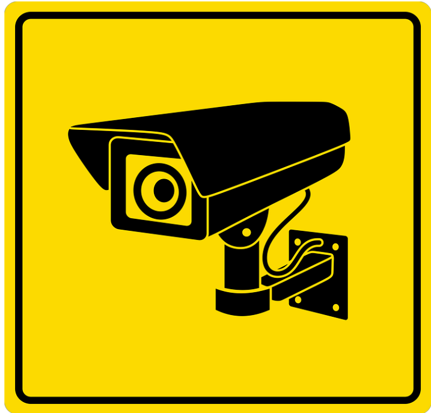

Welcome to the Sable Chemicals facial
recognition training manual. This is a new
system that has been newly introduced at
the organization. A facial recognition system
is a technology that identifies or verifies
individuals based on their facial features. It
uses advanced algorithms to analyze and
match facial characteristics such as the
distance between the eyes, the nose’s shape,
and the lips’ curve. This technology has
gained popularity in recent years and is
being used in various industries, including
security, law enforcement, and retail..
How?
Sable Chemical Industries Limited designed the
system to work through CCTV cameras which
detect employee faces when they login into the
premises. The system will store employee
information in the database and hence recognize
the next time they try logging
Why?
Theft prevention: Facial recognition measures can prevent theft
of physical
assets such as equipment, inventory, and cash.
Protection of employees and customers: Security measures can help
protect
employees and customers from physical harm or threats, such as
violence or
terrorist attacks

When tech companies created
facial recognition systems that are
rapidly remaking government
surveillance and chipping away at
personal privacy, they may have
received help from an unexpected
source: your face.
Companies,
universities,
and
government labs have used millions
of images collected from a
hodgepodge of online sources to
develop the technology. Now,
researchers have built an online
tool, Exposing.AI, that lets people search many of these image
collections for
their old photos.
The tool, which matches images from the Flickr online photo-sharing
service,
offers a window onto the vast amounts of data needed to build a wide
variety
of A. I technologies, from facial recognition to online “chatbots.”
“People need to realize that some of their most intimate moments have
been
weaponized,” said Liz O’Sullivan, the technology director at the
Surveillance
Technology Oversight Project, a privacy and civil rights group. She
collaborated
on Exposing.AI with Adam Harvey, a researcher, and artist in Berlin.
Facial recognition works by using advanced
algorithms to analyze and match facial
features in an image or video to a database
of known faces. The process typically
involves the following steps:
Face detection: The system first
detects and locates a face in an image
or video frame using computer vision
techniques. This involves identifying facial
landmarks such as the eyes, nose, and
mouth.
Face alignment: The system then aligns the detected face to a
standard pose, typically a
frontal view, to ensure that the facial features are in the same
relative positions as
the reference images in the database.
Feature extraction: The system extracts unique features from the
aligned face, such as the
distance between the eyes, the shape of the nose, and the curve
of the lips. These features
are then used to create a mathematical representation of the
face, also known as a face
template.
Face matching: The system compares the extracted face template to
a database of known
faces to find a match. This involves calculating a similarity
score between the face template
and each face in the database.
Recognition decision: Based on the similarity scores, the system
makes a recognition
decision, which could be either a positive identification or a
rejection if there is no match or a
poor match.
Facial recognition technology has become increasingly sophisticated in
recent years, with deep
learning techniques such as convolutional neural networks (CNNs) being
used to improve accuracy
and robustness. However, the technology still faces challenges such as
variations in lighting, pose,
and expression, as well as privacy and ethical concerns.
 Sable Chemical Industries Limited designed the system to work through CCTV cameras which detect employee faces when they login into the premises. The system will store employee information in the database and hence recognize the next time they try logging
Sable Chemical Industries Limited designed the system to work through CCTV cameras which detect employee faces when they login into the premises. The system will store employee information in the database and hence recognize the next time they try logging